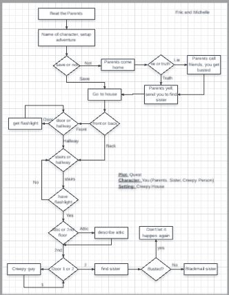
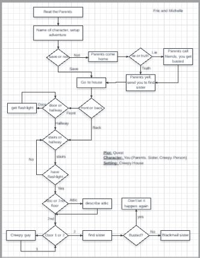
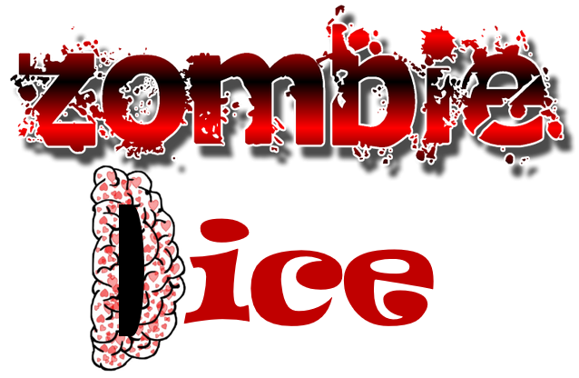
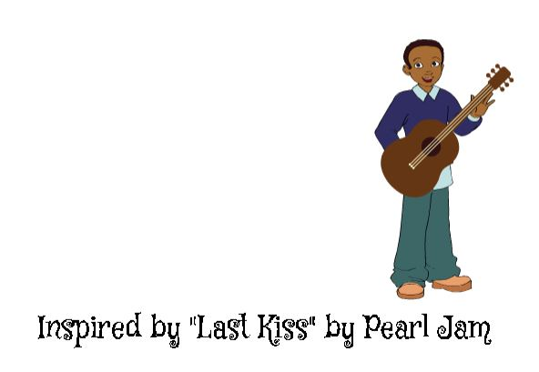
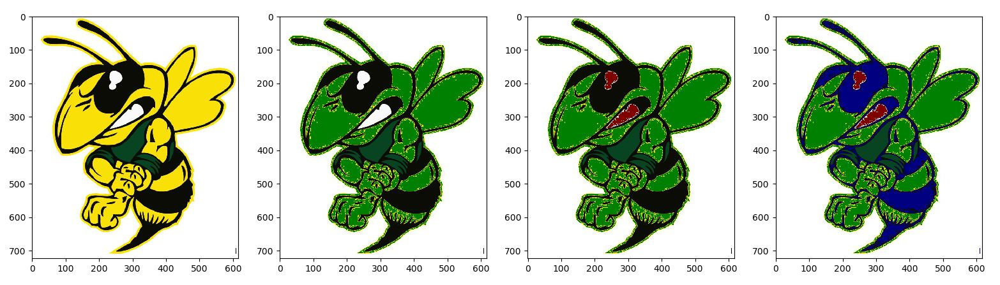
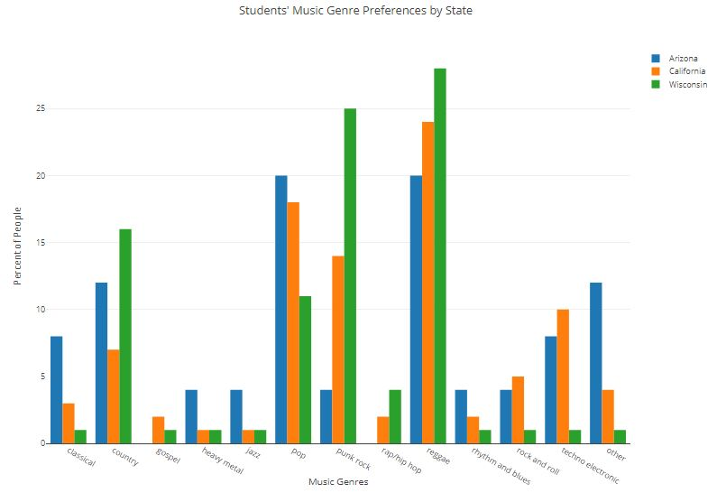
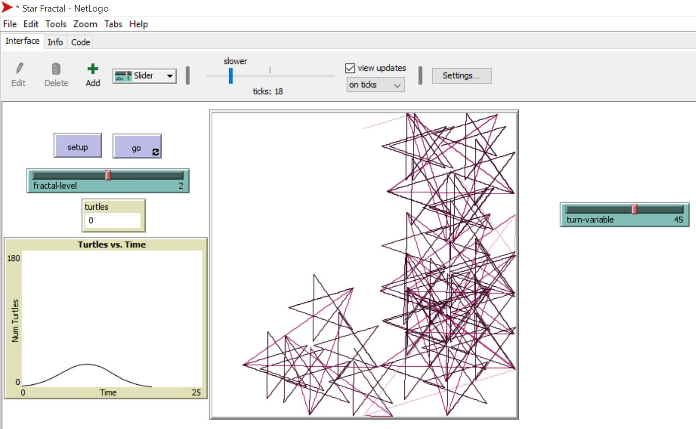

Home
Portfolio
About Me
This is my Portfolio Page!

Check it off app made with MIT AI2 click below


Home Alone interactive fiction with Python
 


Zombie Dice Solitaire game made with Python

"Last Kiss" project made using Scratch

Image Artist Changing Yellowjacket Colors

Big Data graph project using Python

NetLogo project

Project made using Arduino circuits